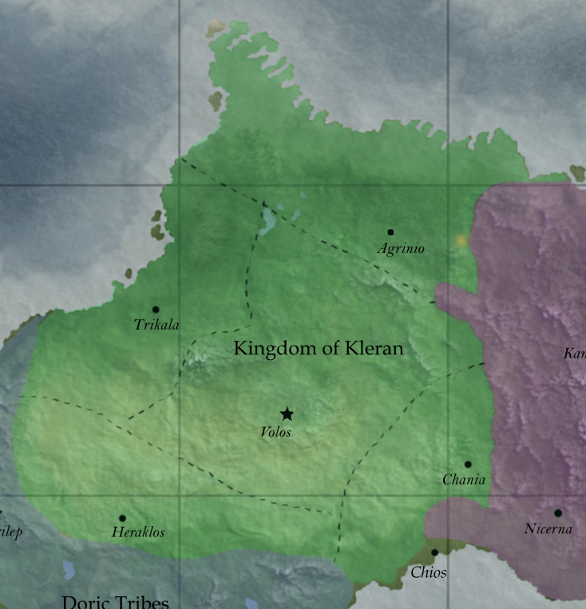
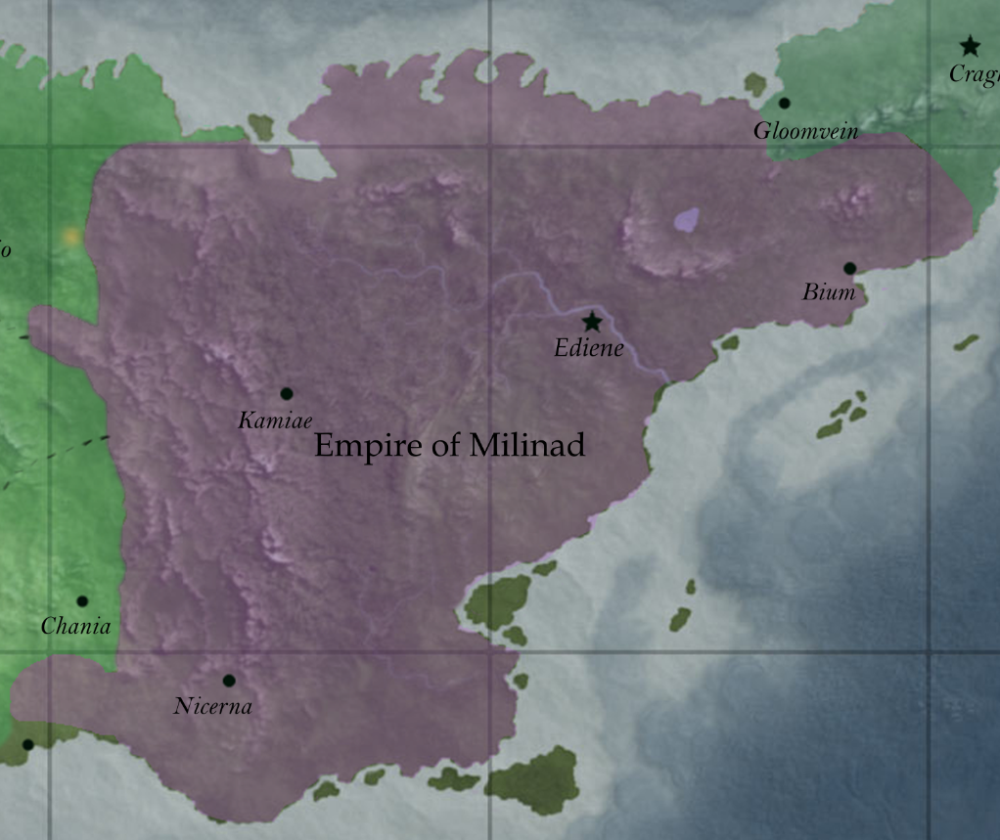
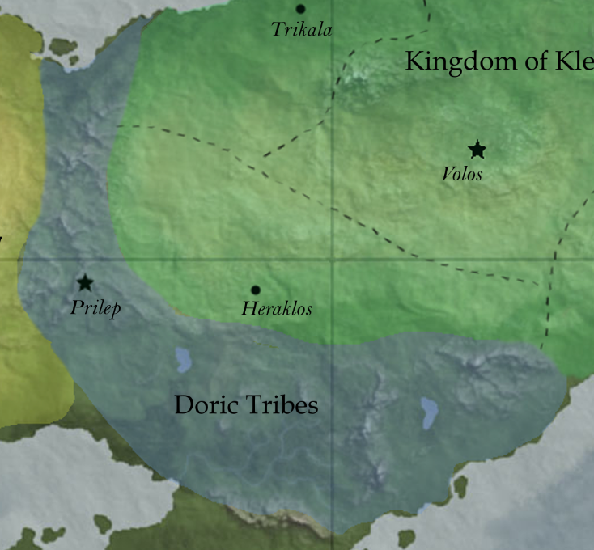
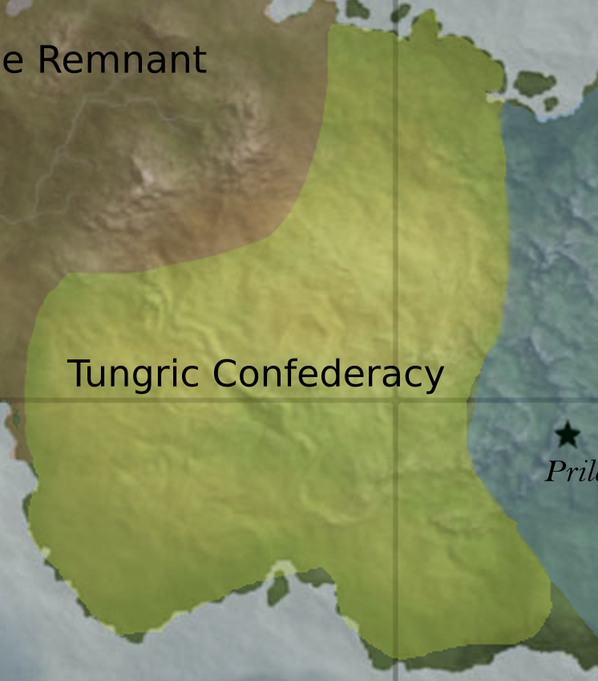
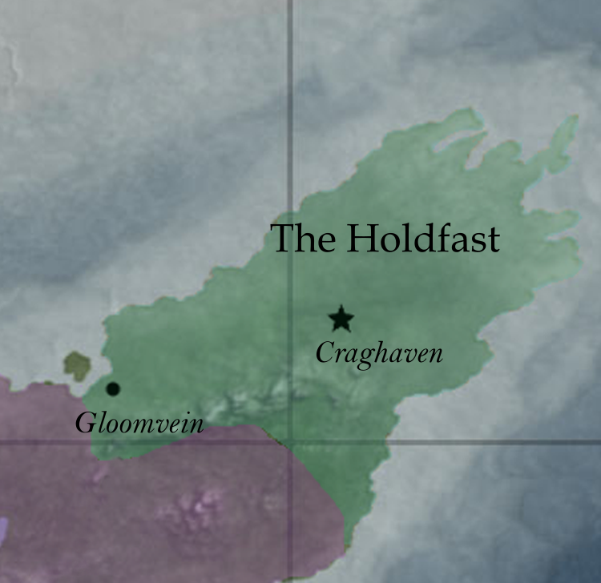
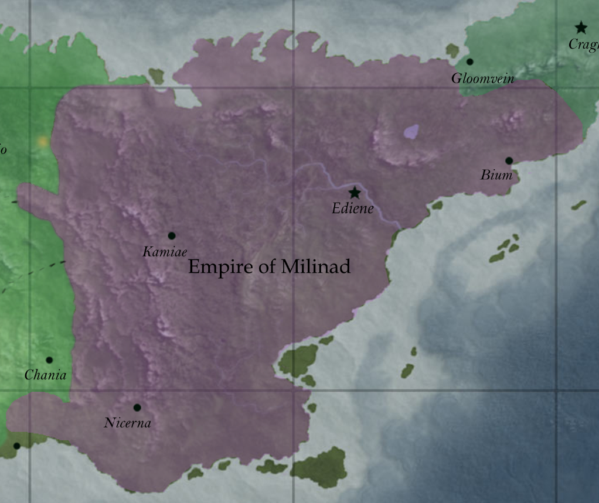
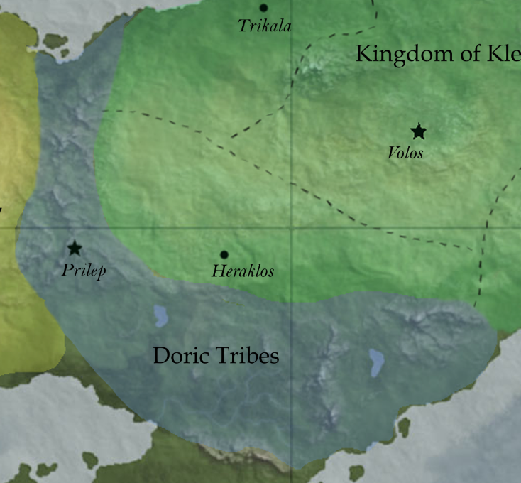
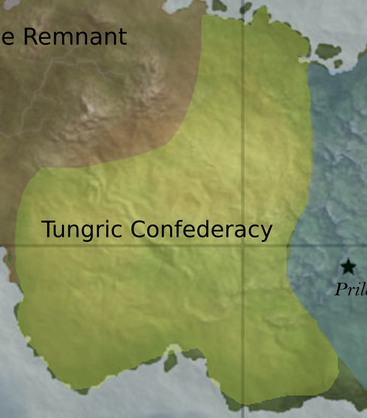
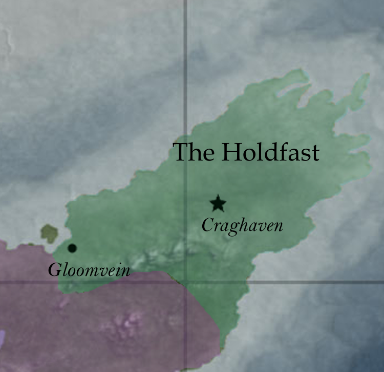

The Kingdom of Kleran is a territory ruled by Osteos, son of Pygmalion. It is a nation of millions and is the great power on the continent of Mairopy. The land is divided into five Satrapies, each ruled by a demigod of great power. These demigods, called Satraps, are the rock upon which Kleran is built. Osteos may fancy himself as the lone power within his kingdom, but the Satraps hold dominion over the day-to-day operations of the kingdom. As the war with Milinad worsens, their power is sure to only increase.
Kleran society is dominated by the war with Milinad and warrior culture in general. Farmers exist to feed the army, tailors exist to clothe the army, blacksmiths exist to arm the army. The young are taught that those who die in battle are remembered in the halls of heaven for eternity. As such, Kleran boasts one of the strongest militaries in existence.
The Milinad Empire is the only other power on Mairopy that can (and is) threating Kleran. The Empire is an empire in name only, however. In reality, it is a half dozen cities nestled deep within the mountains of northeastern Mairopy. These cities all pay fealty to Perialla and Polyxena, the twin daughters of Ambrus. Whereas Osteos is hesitant to rely on the godly powers he and his subordinates possess, Perialla and Polyxena have used their gifts to transform Milinad into a technological juggernaut. Using vast underground factories (and their innate gifts of engineering), the sisters have assembled an enormous army of unthinking automatons. The Clockwork Legion, as their forces have come to be known, have pushed Kleran to a stalemate.
Much of Milinad society is unknown. Their cities are difficult to reach and even more difficult to enter. Mechanization has taken hold to such a degree that some question whether Milinad has much of a society at all.
To the west of Kleran lies the Dorian Mountains and the Doric Tribes that call them home. Not much is known of these people, save for their ruler: Chief Meton. Meton is an enigmatic demigod who uses his powers over the earth itself to protect his people from the attentions of outsiders.
The horsemen of the Karnac Desert are as inscrutable as the Doric Tribes. They are known as the Tungric Confederacy though it is unknown to what extent this name applies. Demas, son of Anteia, rules this land.
The Holdfast is the last human led kingdom on Mairopy. Ruled by Kind Dailon, it is in a constant struggle for survival with Milinad. Out of necessity, The Holdfast has closed its borders to all outsiders. Though this may provide some degree of security, it taken for a fact that The Holdfast only exists for as long as the Kleran-Milinad war does.
...
The Kingdom of Kleran

The Empire of Milinad

The Doric Tribes

The Tungric Confederacy
